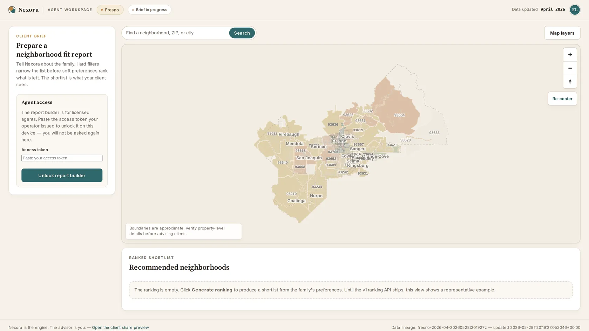
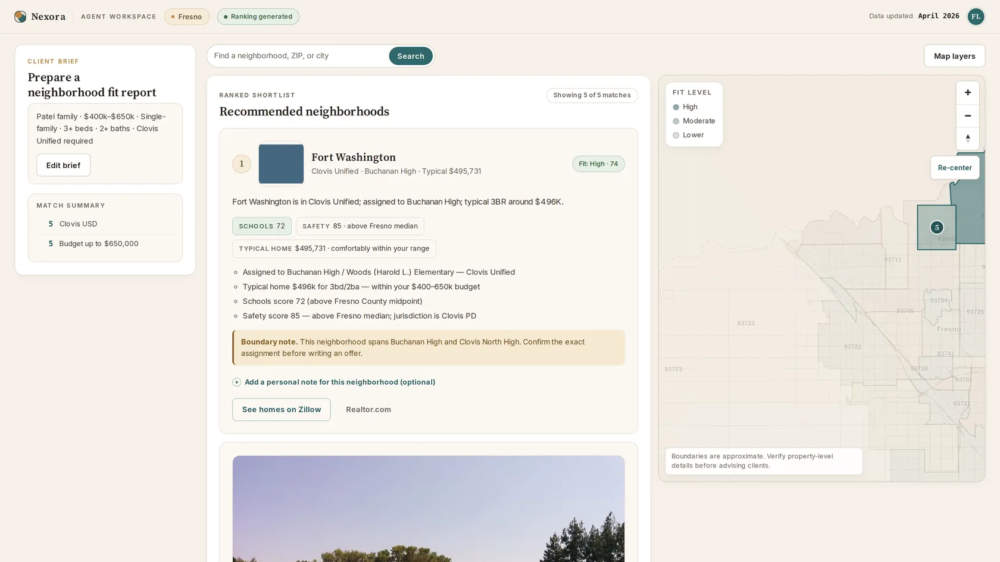
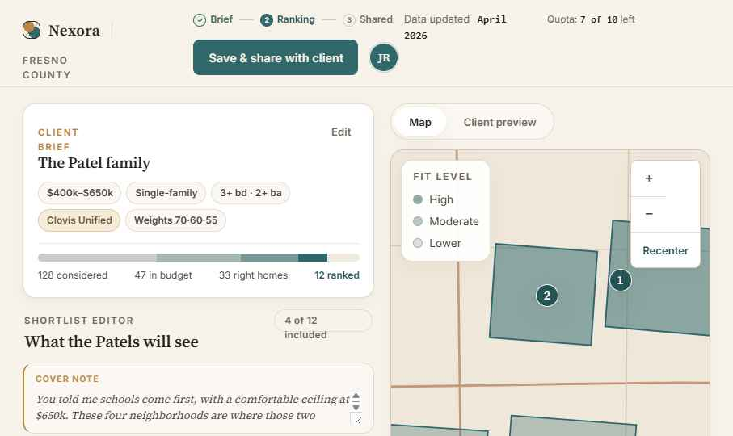
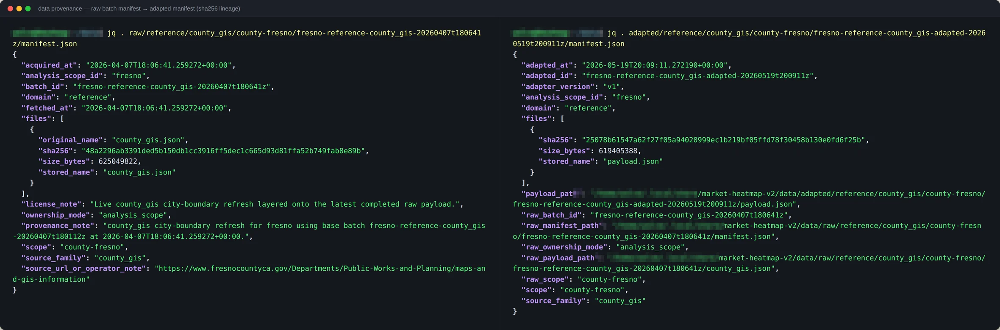

Nexora · case study
Neighborhood intelligence, county-first
Engineering case study
Nexora ranks neighborhoods in a county against a family's stated budget and priorities for real-estate agents. The picker is the interface; this page documents the data pipeline, scoring, and serving runtime behind it.

The system, in numbers
The current system uses Python 3.12 and SQLite. Its three Python dependencies are Shapely for geometry, WeasyPrint for PDF reports, and Pillow for images; the map client is vendored MapLibre GL. It requires no npm or Node build, cloud service, or external database.
The face
An agent describes the family once — budget, beds, school district, priorities. Hard constraints filter the county; soft preferences weight what's left; the result is a ranked shortlist with plain-language reasons an agent can hand to a client.
Every card carries its evidence: assigned schools with scores, safety relative to the county median, typical home price against the family's range — and honest caveats, like a neighborhood that straddles two attendance boundaries.
One click turns the shortlist into a branded share link or a print-ready PDF report.


The platform
Data moves one direction through hard boundaries: source quirks die in the first two stages, scorers only ever see canonical facts, and the web runtime only ever reads frozen, versioned bundles. No stage can peek upstream.
Extract raw, hashed on arrival
Payloads pulled from county GIS services and public datasets — every file SHA-256-fingerprinted the moment it lands.
Adapt quirks end here
Each source family becomes a structured, versioned artifact. Downstream code never sees a source's file format again.
Normalize one canonical schema
Adapted records land in canonical tables; every run is stamped with the normalizer version that produced it.
Snapshot geometry, frozen
For a county and month: clipped polygons, hex-cell grids, school-attendance overlaps — computed once, then immutable.
Score with confidence labels
Market state per hex cell; schools and safety per neighborhood. Thin evidence shrinks estimates toward neutral instead of overclaiming.
Publish sealed bundles
Scored results become a self-contained, versioned bundle — manifest, payloads, map thumbnails — tracked in a publication index.
Bootstrap fail-closed
The runtime database is rebuilt from the latest bundle. A version mismatch refuses to load — there is no silent legacy fallback.
Serve rank at request time
A lightweight web runtime ranks against each family's preferences live, and renders the map UI, share links, and PDFs.
Scorers never see raw data. The runtime never sees the pipeline. Refreshing a county is one command.
Source lineage
Families make six-figure decisions on this output, so every artifact records what it came from, when, under which code version, and with what fingerprint. Below, one real lineage pair: a raw county-GIS batch and the adapted artifact derived from it.

The schema, in the open
The table names below are generated from the current schema and grouped by layer. Their prefixes mark boundaries enforced in code: source-specific data is separated from canonical facts, snapshots, scores, and the 14-table serving runtime.
meta_analysis_scopemeta_analysis_scope_sourcemeta_citymeta_countymeta_county_reference_foundationmeta_county_source_policymeta_county_zipmeta_layermeta_normalization_runmeta_publication_buildmeta_score_buildmeta_snapshot_buildmeta_source_batchref_agent_tokenref_city_boundaryref_county_boundaryref_neighborhoodref_neighborhood_school_assignmentref_parcelref_parkref_reference_pointref_road_segmentref_schoolref_school_attendance_arearef_school_districtref_school_zoneref_zip_arearef_zoning_areaobs_assessment_observationobs_listing_eventobs_permit_eventobs_sale_eventobs_school_metricobs_vendor_property_observationobs_zip_market_monthobs_zip_sale_observationsnapshotsnapshot_areasnapshot_area_parentsnapshot_parcel_assignmentsnapshot_parcel_centroidsnapshot_parcel_salesnapshot_partition_definitionsnapshot_reference_layersnapshot_rent_observationsnapshot_sale_observationsnapshot_serving_contextsnapshot_source_familysnapshot_zip_tightness_observationscore_area_month_explanationscore_area_month_market_statescore_neighborhood_qualityscore_zip_safetyruntime_cellruntime_cell_detailruntime_data_provenanceruntime_manifestruntime_neighborhoodruntime_neighborhood_school_assignmentruntime_parcel_centroidruntime_parcel_saleruntime_reference_layerruntime_saved_reportruntime_schoolruntime_school_attendance_arearuntime_zipruntime_zip_detailgenerated from the CREATE TABLE statements in storage.py · 67 tables · 53 canonical, 14 runtime
Below the waterline
The family picker deliberately surfaces a fraction of what the platform computes. The rest is implemented in the current serving runtime, one toggle or one data feed away.
Heat, tightness, trend, and acceleration scored per hex cell across the county — an investor's layer, dark by default in the family product.
Parcel geometry with APN, address, and sale history behind a disabled map layer.
The registry-driven path covers boundary validation, ZIP baselines, and GIS profiles without changing engine code. Fresno is the only county run end to end.
Monthly publications are indexed and retained. The runtime serves the latest; a time-series interface is not implemented.
Known limits
Public audit surface
The product repository remains private. The public Nexora Audit Edition is a synthetic, executable extraction of five reliability mechanisms. I directed the extraction and adversarial review; coding agents produced most of the implementation under executable tests and release gates. Version 0.1.1 includes the tests, machine-readable claims, source map, known limitations, and correction record, but no product interface, real data, production configuration, or private history. It is released under AGPL-3.0-only.